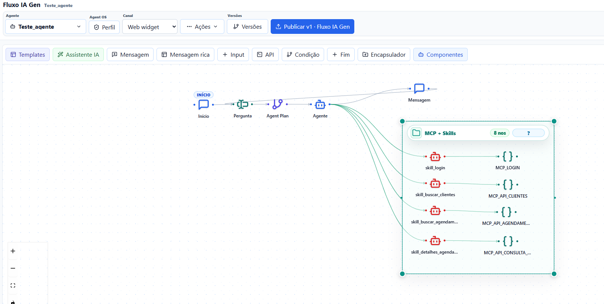

O Canvas Flow nasceu para reduzir a distância entre desenhar uma automação com IA e colocar essa automação rodando de verdade. Em vez de espalhar prompt, script, API, RAG, memória e canal em lugares diferentes, o produto junta tudo em um canvas operacional.

O que você consegue criar
O editor permite montar agentes com mensagens, inputs, chamadas HTTP, condições, RAG, MCP, aprovação humana e finalização. O painel de teste mostra o comportamento do fluxo antes de publicar para usuários reais.
- Agentes para API, Web Widget, WhatsApp e webhooks.
- RAG com documentos e bases vetoriais.
- Tools externas via MCP e APIs controladas.
- Memoria por `agentId + conversationId`.
- Versões, releases, API keys e provider config.
Por que standalone via npm
O pacote `@igoruehara/canvas-flow` entrega uma experiência parecida com ferramentas locais de automação: você roda um comando, o backend NestJS sobe, o frontend estático é servido e a configuração privada fica fora do pacote publicado.
npx @igoruehara/canvas-flow@latest --with-docker --openAgent OS e MCP
Para fluxos mais sofisticados, o Canvas Flow usa Agent OS: `agents.md`, guardrails, rules, skills, subagents e manifesto de capacidades. O agente orquestrador delega para especialistas internos, enquanto MCP conecta ferramentas externas e também permite expor flows como tools.
O resultado é uma arquitetura simples de explicar: Agent OS para raciocínio e delegação interna, MCP para ferramentas, canais para consumo.
Próximo passo
Comece pelo guia de uso, crie um agente simples e depois adicione RAG, MCP ou canais conforme a necessidade do seu caso real.